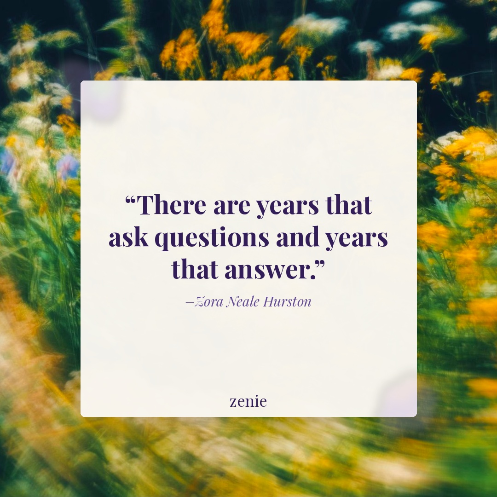
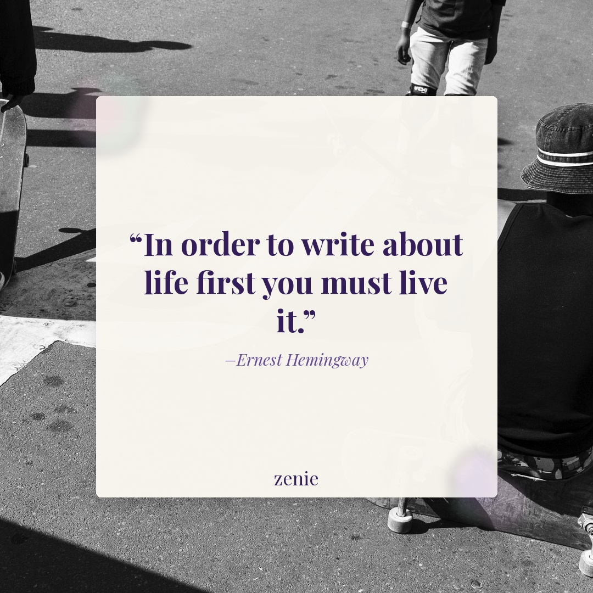

Meme 1
She's literally doing it again 🍂 Tonight's prompt: what did you keep starting (and abandoning) this year — and what do you think was actually stopping you?
Best time: Monday 6–8 PM PST
She's literally doing it again 🍂 Tonight's prompt: what did you keep starting (and abandoning) this year — and what do you think was actually stopping you?
Best time: Monday 6–8 PM PST

“There are years that ask questions and years that answer.”
— Zora Neale Hurston
FB: Some seasons are made for sitting with the not-knowing. ✨ Tonight’s prompt: what question has this year been asking you — the one you keep circling without quite landing on an answer? Save this for a quiet moment this week.
Best time: Tuesday 7–9 PM PST
Testing: Hurston’s question/answer framing matches October’s introspective energy; the literary weight without clinical distance fits aphorism_plate format which tested well for similar quotes in August; 'name the unresolved question' should drive saves above the recent median.
Creator: @lavendaire ⚠️ UNVERIFIED — confirm creator against the reel before posting
Caption: Credit: @lavendaire ⚠️ [confirm before posting] This one hit. Tonight’s prompt: what season are you in right now — not literally, but emotionally? Describe it like you’re describing the weather.
FB: Credit: @lavendaire ⚠️ [confirm before posting] This one hit differently 🍂 Tonight’s prompt: what season are you in right now — not literally, but emotionally? Describe what it looks like, sounds like, and feels like. Drop it in the comments — I’d love to read yours.
Best time: Wednesday 12–2 PM PST
Testing: Reposting an autumn/reflection reel from a large journaling creator (Lavendaire, multi-million followers) leverages established trust in the niche; the 'emotional season' prompt is concrete and unusual enough to drive saves and comments without asking for too much vulnerability.
Every era feels completely real when you’re in it 🌸 Tonight's prompt: what does healing actually look like for you right now — not the version you’d post about, the version you actually live?
Best time: Thursday 6–8 PM PST
Creator: @the.inner.child ⚠️ UNVERIFIED — confirm creator against the reel before posting
Caption: Credit: @the.inner.child ⚠️ [confirm before posting] This is your sign. Tonight’s prompt: what’s something a close friend said to you recently that you haven’t fully sat with yet — write about what it stirred up.
FB: Credit: @the.inner.child ⚠️ [confirm before posting] Sometimes a friend says something casually and it just… stays with you. Here’s your prompt: what’s something someone close to you said recently that you haven’t fully processed yet — what did it stir up, and why? Let’s talk about it below.
Best time: Friday 12–2 PM PST
Testing: Reposting inner child / friendship-reflection content from a niche creator; friendship prompts have historically out-saved dating posts on IG in Zenie's niche, so this angle should drive saves; 'something a friend said' is specific enough to feel personal without being exclusionary.

“In order to write about life first you must live it.”
— Ernest Hemingway
FB: Not every feeling needs to be sorted before it gets written down. Sometimes the writing is the living. ✨ Tonight’s prompt: what’s something that happened this week that you haven’t let yourself fully feel yet — write about it without editing, no good version required. Tag someone who journals or should start.
Best time: Saturday 11 AM–1 PM PST
Testing: Hemingway’s 'live it to write it' framing gives permission to journal raw, unprocessed experiences; prompt_card format tested well for direct-action asks; the explicit 'no editing' instruction removes the perfectionism block — expect strong save rate on FB.